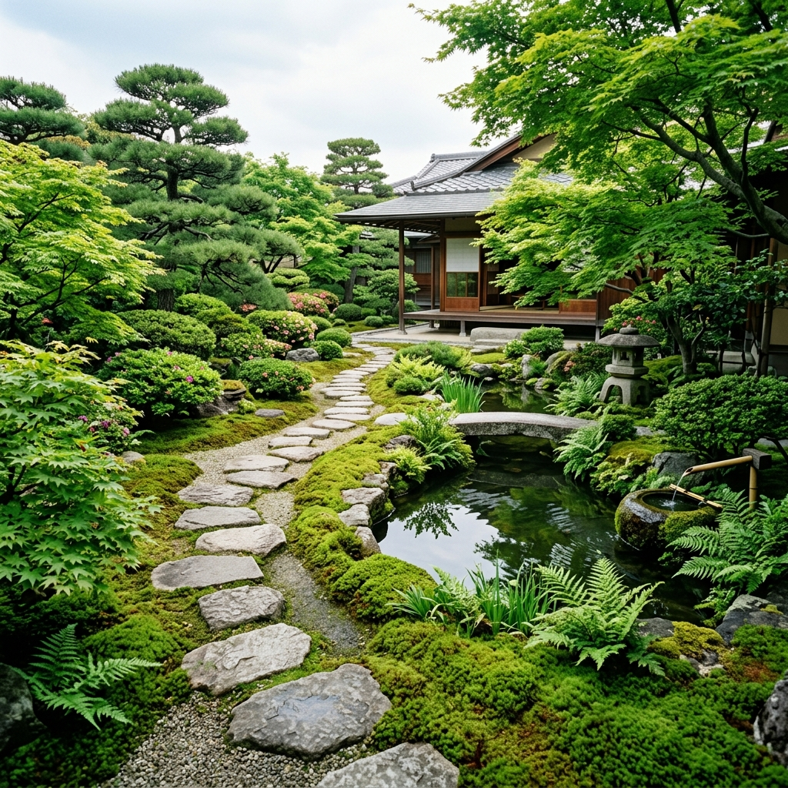

Our Philosophy
緑と共に暮らす豊かさを、
あなたのお庭にお届けします。
私たちは、草木の一本一本に心を配り、お客様のライフスタイルに寄り添ったお庭づくりを大切にしています。
日本庭園からナチュラルガーデンまで、伝統の技術と現代のデザインを融合させた、世界にひとつだけのお庭をご提案します。
Service
和庭・洋庭・ナチュラルガーデンなど、ご希望に合わせたお庭をお造りします。
定期的な剪定で庭木の美しさを保ちます。年間管理プランもございます。
アプローチ・テラス・石積み・生垣など、外構まわりもトータルコーディネート。
Works